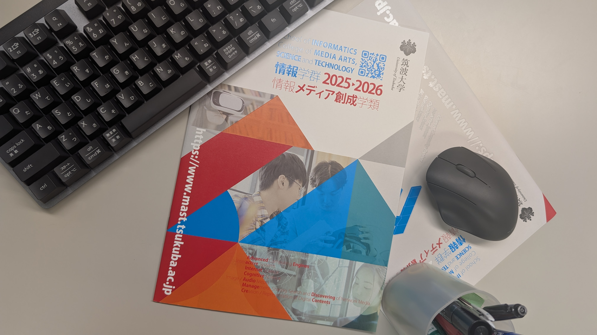
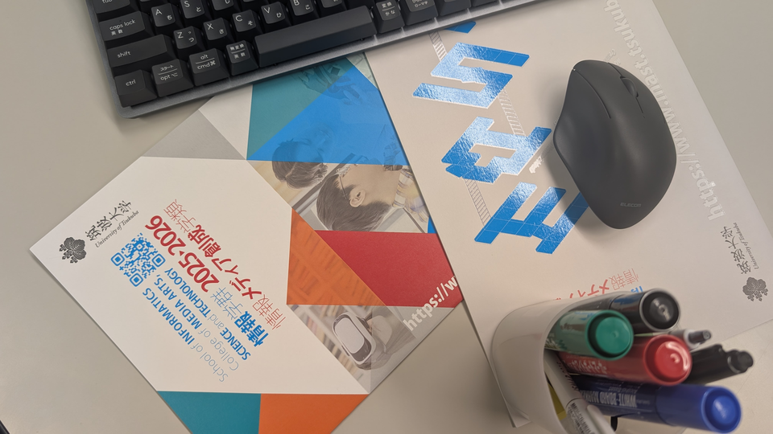

OpenCVについて
OpenCV(Open Source Computer Vision Library)は
Intel社が開発した画像に関する様々な処理を行うことができる
オープンソースのC/C++ライブラリである．画像処理に必要な数学的な処理(線形代数など)，画像・動画の読み込み/書き出し，
エッジ抽出や物体検出，物体追跡，カメラキャリブレーション，機械学習などその機能は多岐にわたる．
OpenCVはそれ単体で動くプログラムではなく，プログラム中でその機能を使うためのライブラリである．
OpenCVを使うことで複雑な画像処理プログラムをもっと簡単に書くことができるようになる．
本演習ではOpenCVの基本的な使い方を学び，講義で行った画像処理をOpenCVでプログラミングすることで，
より理解を深めることを目的とする．
環境設定とサンプルプログラムの実行
環境設定
OpenCVはオープンソース(Apache2ライセンス)のライブラリであり， Windows,Linux,Mac,Android,iOSと様々なプラットフォームに対応している． 今回の演習では，全学計算機システムのWindows環境を用いる． その他の環境で実施する場合はそれぞれ自己責任で行うこと(環境依存の問題についてのサポートは行わない)．
サンプルプログラムの実行
下記リンクからサンプルプログラムをダウンロードする．
ダウンロードしたzipファイル(cvproject.zip)を解凍し， cvproject/src/cvproject.slnを開く． 実習室PCのWindows環境に入っているVisual Studio 2022(以下VS2022)での演習方法(サンプルプログラムのビルド/実行方法)は 以下のリンク参照
他の環境での実行
実習室ではなく自身の環境で実行する場合，以下のような方法が可能．
-
Windowsならば無料版のVisual Studio(Visual Studio Community)をインストールして，上記Visual Studioを使った演習に従って実行
(参考) 無料版VisualStudioのインストール方法
サンプルプログラムのVSCommunity2022での実行はこちらで確認済み．最近(2025年11月11日)リリースされたばかりのVisual Studio 2026については未確認なので注意(VS2026で実行する場合は自己責任で)．
OpenCVはMacやLinuxなど他のプラットフォームに対応しているので， ライブラリを自分の環境に合わせてダウンロードして実行することも可能であるが， その場合は，インクルード,ライブラリの設定は自分で行うこと(こちらではサポートしないので自己責任で！)． また，OpenCVはpythonにも対応しているので，pythonで実行してもOK(python環境が整っているなら pip opencv-python だけで導入できる． Google Colaboratoryならデフォルトでopencv-pythonが入っている)．ただし，環境設定や使う関数などについては自分で調べること．
自分の環境で行う場合は以下の画像を右クリックし，"名前をつけてリンク先を保存"を選んで，
画像をプログラムの実行フォルダにダウンロードする

次に以下のサンプルプログラムを自身のプログラム環境で入力し，実行する()．
// インクルードファイル
#include <stdio.h>
#include <opencv2/opencv.hpp>
using namespace cv; // 名前空間の設定
int main(void)
{
Mat img, gray;
img = imread("sample512.png", IMREAD_COLOR); // 画像ファイルの読み込み
if(img.empty()){
printf("Unable to load the image");
return 1;
}
cvtColor(img, gray, COLOR_BGR2GRAY); // グレイスケールに変換
namedWindow("Display Image", WINDOW_AUTOSIZE); // ウィンドウ生成
imshow("Display Image", gray); // 画像表示
// キー待ち状態に移行
while(1) {
int c = waitKey(10); // 引数はdelay
switch((char)c) {
case 'q': // qキーでプログラム終了
return 0;
}
}
return 0;
}
元の画像をグレイスケール化したものが表示されるはずである．画像が表示されたウィンドウを選択後，'q'キーを押すとプログラムは終了する．
このプログラムでは
- imread関数で画像ファイルを読み込み(JPEG,PNG,BMP,TIFFなどに対応)
- cvtColor関数にCOLOR_BGR2GRAYを指定することでカラー→グレイスケール変換
- namedWindowでウィンドウを作り，imshowでグレイスケール画像を画面表示
をしている．最後のwaitKey関数は内部にループを持ち，ユーザがキー入力するの待ち続ける状態にする．
引数に時間(0以外)を指定するとその時間後に入力されたキーを返す．このサンプルではその情報を使って，
キーボードによる操作を行っている('q'キーを押すとプログラム終了)．
画像はMatという型に格納される．Matは画像だけでなく，実行結果や行列などOpenCVにおける様々な配列要素を格納するのに用いられている．
演習課題1
サンプルプログラムを変更し，以下の機能をつけよ．
- ユーザが入力した閾値による2値化
- 判別分析法(大津の方法)による2値化
- 結果画像のファイル保存機能(ファイルフォーマットは自由)
グレイスケール化した後に2値化すること(グレイスケール化の方法は上記サンプル参照)．
以下の画像(右クリックして「名前をつけてリンク先を保存」)に対して，
閾値を自分で調整して2値化した結果と判別分析法で自動的に2値化した結果を比べよ．
余裕のある人は画像を領域に分けて，領域毎に2値化していく適応的2値化も試してみよう．

なお，ユーザによる値の入力方法はどのようなものでもよい．
例: 特定のキー入力で値を増減させる，scanfを用いてターミナルから入力，など．
時間に余裕のある人は
こちらのページを参考にして
閾値を増減させるGUI(Trackbar)を実装してみよう．
上記画像をグレイスケール化したもののヒストグラムを以下に示す．考察時に必要に応じて用いてもよい．

参考(OpenCVの関数)
- フィルタ処理
threshold(const Mat &src, Mat &dst, double thresh, double maxval, int type)
画像の2値化を行う． 引数srcで指定する入力画像はグレイスケール画像(8 or 32ビットのシングルチャンネル画像)でなければならない． 出力画像は引数dstで受け取る． threshは2値化の閾値で判別分析法の場合はどんな値を指定しても無視される． maxvalは2値化の結果として設定する画素の値であり，基本的には255としておけばよい．
typeは2値化の方法を指定するための引数で以下のようなものがある．- THRESH_BINARY : 閾値以下の画素は0，それ以外はmaxvalにする
- THRESH_BINARY_INV : 閾値以下の画素はmaxval，それ以外は0にする
- THRESH_TRUNC : 閾値を超える画素をthresにする(それ以外は変更しない)
- THRESH_TOZERO : 閾値以下の画素を0にする(それ以外は変更しない)
- THRESH_TOZERO_INV : 閾値を超える画素を0にする(それ以外は変更しない)
- THRESH_OTSU : 判別分析法(大津の方法)で閾値を決定する．上記5つと併せて指定する
基本的にはTHRESH_BINARYを用い，判別分析法を用いる場合はこれにプラスしてTHRESH_OTSUも指定する． 2つ以上のフラグをしてする場合は単純に足す(例.THRESH_BINARY+THRESH_OTSU)かOR演算する (例.THRESH_BINARY | THRESH_OTSU)． ちなみに上の5つは同時指定できないので注意．
adaptiveThreshold(const Mat &src, Mat &dst, double maxValue, int adaptiveMethod, int thresholdType, int blockSize, double C)適応的2値化を行う． maxValueはthreshold関数のmaxvalと同じ． adaptiveMethodにはADAPTIVE_THRESH_MEAN_CかADAPTIVE_THRESH_GAUSSIAN_Cを指定(前者は単純に周囲画素の平均, 後者はガウシアンを重みとした総和から最後の引数Cの値を引いたものを閾値として用いる)． thresholdTypeは2値化の方法でTHRESH_BINARYかTHRESH_BINARY_INV， blockSizeは近傍領域のサイズで1,3,5のように奇数を指定する．
- 画像ファイル保存
imwrite(const string &filename, const Mat &img, const vector<int> ¶ms=vector<int>())
画像をファイル保存する．filenameの拡張子(bmp,png,jpgなど)で画像フォーマットは決まる． 第3引数では保存パラメータとして，JPEGの品質，PNGの圧縮レベルなどを指定できるが， 何も指定しなければデフォルト値(JPEG:95,PNG:3)が使われる．
演習課題2
以下のターゲット画像1からマッチング画像とマッチする局所特徴点を探し出し，その結果を点と線で示せ．
また，ターゲット画像2についても同様に結果を表示してみよ．
局所特徴量の種類は何でも良いが，拡張モジュールを導入していないOpenCV3以降では"SIFT"や"SURF"は使えないので注意．
これ以降の説明(特に参考のところ)では"ORB"を用いている．
他に平面トラッキングにより強いKAZE,AKAZEも使える．
マッチング画像(右クリックして「名前をつけてリンク先を保存」)
ターゲット画像1(右クリックして「名前をつけてリンク先を保存」)

ターゲット画像2

{kind=link}
{kind=link}
{kind=link}
参考(OpenCVの関数)
ORB以外の特徴量を用いる場合は下記ORBの部分をすべてその特徴量名(KAZEやAKAZE,BRISKなど)で置き換えること．
-
特徴点検出＆特徴量計算
Ptr<ORB> ORB::create(int nfeatures,...)
特徴点(キーポイント)検出器を生成する． 引数のnfeaturesには特徴の最大数(あくまで最大でここで指定した数の点が必ず得られるわけではない)を指定する． 指定しなければデフォルトの500が使われる． そのほかに引数に様々なパラメータを指定できる． 上記以外の引数については OpenCVのドキュメント を参照してほしい．なお引数は特徴量の種類によって違うので注意．
実際にキーポイントを抽出し特徴量を計算するためには ORB型のポインタ(Ptr<ORB>はORB型のポインタ)とdetect関数,compute関数を使って，
Ptr<ORB> feature = ORB::create(1500) std::vector<KeyPoint> keypoints; feature->detect(image, keypoints); Mat descriptor; feature->compute(image, keypoints, descriptor);
とすることで，配列keypointsにキーポイントの情報が格納され， 行列descriptorに特徴量が格納される． std::vectorは容量可変の動的配列型である． detect,compute関数の第一引数には探索したい画像(Mat型)を渡す．
-
特徴点のマッチング
Ptr<DescriptorMatcher> DescriptorMatcher::create(const string& descriptorMatcherType )
2つの画像の特徴量情報からそれぞれマッチする特徴点を探し出す． descriptorMatcherTypeにはマッチングのアルゴリズムを文字列で指定する． 文字列には以下を指定できる．
文字列 マッチングに使う距離 "BruteForce" L2距離 "BruteForce-L1" L1距離 "BruteForce-SL2" L2距離(平方根計算なし) "BruteForce-Hamming" ハミング距離 "BruteForce-Hamming(2)" ハミング距離(ORBのパラメータでWTA_Kを3か4にした場合はこちらを使う．
デフォルトは2なので何も変更してなければ"BruteForce-Hamming"でよい)"FlannBased" FLANNを用いたマッチング BRISK,ORBのようにバイナリ値を用いる特徴量計算機に対してはL1,L2距離ではなくハミング距離を用いるのが一般的である．また，FlannBasedはORBと組み合わせて用いた場合，エラーとなり使えない(FlannBasedはデフォルトでL2距離を使うため)．ORBを使う場合は別のアルゴリズムを用いるようにしよう (FlannBasedMatcherでindexParamにflann::LshIndexParamsを指定すれば使える？)．
FeatureDetectorの時と同じように，実際にマッチングする際には， DescriptorMatcher型のポインタとmatch関数を使って，
Ptr<DescriptorMatcher> matcher = DescriptorMatcher::create("BruteForce-Hamming") std::vector<cv::DMatch> matches; matcher->match(descriptor1, descriptor2, matches);とすることで，配列matchesにマッチング結果が格納される． match関数の第一,二引数には特徴点検出＆特徴量計算のところで計算した特徴量を格納した行列(マッチング画像とターゲット画像)を渡す．
-
マッチング結果の表示
void drawMatches(const Mat& img1, const vector<KeyPoint>& keypoints1, const Mat& img2, const vector<KeyPoint>& keypoints2, const vector<DMatch>& matches1to2, Mat& outImg, const Scalar& matchColor=Scalar::all(-1), const Scalar& singlePointColor=Scalar::all(-1), const vector<char>& matchesMask=vector<char>(), int flags=DrawMatchesFlags::DEFAULT );ターゲット画像とターゲット画像を並べて表示し，それぞれの特徴点およびマッチング結果を点と線で描画した画像を生成する． img1,img2にそれぞれ画像，keypoint1,keypoint2に各画像の特徴点情報， matches1to2にマッチング結果，outImgに出力画像(画面に表示する画像)を指定する． outImg以降の引数で線や点の色などを設定できるが特にデフォルトから変更なければ指定しなくてもよい．
-
局所特徴量の計算ではstd::vectorという動的配列型が使われている．
これはStandard Template Libraryというライブラリの機能であり，ほとんどのC++プログラム開発環境でサポートされている
標準的なものである．
std::vectorでは宣言時に型を指定する．例えばint型の配列ならば，std::vector<int> x
とする．通常の配列宣言と異なり，x[10]のように宣言時に配列のサイズを指定する必要がない． 配列のサイズは必要に応じて動的に変更することができる．
配列の要素にアクセスする時は通常の配列と同じようにすればよい(例えばi番目の要素ならx[i])． また，現在の配列の大きさを知りたい場合はsize関数を用いる．int n = x.size()
ヒント : ターゲット画像，マッチング画像はcvtColorを使ってグレイスケールに変換しておくこと． 両画像についてそれぞれキーポイントと特徴量を計算して，両者のマッチングを取り，drawMatches関数で結果画像を作って， それをimshow関数に渡すことで描画する．
オプション課題(時間に余裕のある人用)
時間に余裕がある人は得られた特徴点ペアからRANSACにより以下の2枚の画像の位置関係を表すホモグラフィ行列(射影変換行列)を求め，
その行列に基づき2枚の画像を合成して一枚のパノラマ画像を作成してみよう(自分が撮影した画像を用いてもよい)．
| 画像1 | 画像2 |
|---|---|
 |
 |
| (それぞれ右クリックして「名前をつけてリンク先を保存」) | |
参考(OpenCVの関数)
-
ホモグラフィ行列の計算と画像の射影変換
Mat findHomography(InputArray src, InputArray dst, int method, double ransacReprojThreshold = 3)(5つ目以降の引数は省略)
対応する特徴点を格納した2つの配列(src,dst)からホモグラフィ行列(射影変換行列)を計算する． 結果の行列は返値として受け取る (srcの点をx，dstの点をy，返値のホモグラフィ行列をMとすると，y = M xの関係となる)． 第3引数のmethodには計算方法を指定する．RANSACの場合はRANSACを指定する．RANSAC以外にLMedS推定(LMEDS)にも対応している． 第4引数のransacReprojThresholdはmethodにRANSACを指定した場合のみ有効で，特徴点のペアが外れ値かどうかを判別する閾値である． ちなみに上記では省略している第5引数maskでRANSACで外れ値と判断されたかどうかの結果を受け取ることも可能．特徴点の指定にはInputArray型変数で渡す必要がある．これは配列を使った入力全般を表し， Matやvector<Point2f>など様々な形式の配列に対応している． ただし，マッチング結果を格納する特殊な型の配列であるvector<cv::DMatch>には当然対応していない． そのため，for文を使ってMatやvector<Point2f>の配列に入れ直す必要がある．
void warpPerspective(InputArray src, OutputArray dst, InputArray M, Size dsize, int flags = INTER_LINEAR, int borderMode = BORDER_CONSTANT, const Scalar& borderValue = Scalar())(6つ目以降の引数は省略)
ホモグラフィ行列Mに従って入力画像srcを射影変換し，結果を出力画像dstに格納する． 第4引数dsizeには出力画像のサイズを指定する(合成した画像が切れないように元画像の横幅1.5～2倍程度，縦幅1.1～1.5倍程度を指定しておく)． 第5引数のflagsは射影変換後の画像を画素に格納するときの補間方法を指定する (デフォルトは線形補間(INTER_LINEAR)で他に双三次補間(INTER_CUBE)や8x8のLanczos法(INTER_LANCZOS4)も指定できる)． flagsには補間方法に加えてWARP_INVERSE_MAPを指定することで逆変換(M^(-1))にすることもできる． この場合はOR演算子"|"を使って，INTER_LINEAR|WARP_INVERSE_MAPのように指定する． 第6,第7引数ではborderModeでピクセルの外挿方法を指定し，これがBORDER_CONSTANTの場合にその色をborderValueとして指定する．
ヒント : パノラマ画像生成では2枚の画像の特徴点を抽出し，そのマッチングを行った後，
findHomography関数で特徴点間のホモグラフィ行列を計算し，warpPerspectiveで片方の画像を投影変換，もう一方の画像をそちらに貼り付ければよい．
処理のイメージを下図に示す．2枚の画像をそれぞれimg1,img2としてMat H = findHomography(img1, img2, RANSAC);
でホモグラフィ行列を計算した場合の例である．この場合，img2をH^(-1)で投影変換した結果にimg1を重ねればよい．

img1を変換後のimg2に配置するにはwarpPerspectiveの第三引数の変換行列に単位行列を渡してやればよい．
注意としてこのときに第6引数のborderModeにBORDER_CONSTANTを指定してしまうと，
すでに配置されたimg2がborderValueで上書きされてしまうので，
BORDER_TRANSPARENTを指定するように．単位行列の生成にはMatクラスの関数eyeを使えばよい(下記例参照)．
Mat I = Mat::eye(3, 3, CV_64F); // 単位行列生成 // img2を変形した画像pano_imgにimg1を配置 warpPerspective(img1, pano_img, I, dsize, INTER_LINEAR, BORDER_TRANSPARENT);
レポート
演習課題1と2(+やった人はオプション課題)について，画像処理した画像，元画像，使用した手法・パラメータなどの説明，結果に対する考察をまとめて，
レポートとしてPDFにしたものをmanaba「画像・映像情報処理」の「レポート」
の「後半の実習レポート」に提出せよ．
なお，作成したコードをレポートに載せること(ソースコードのファイル(.c/.cppファイル)を一緒に提出するのでもかまわない)
レポートの締め切りは2025年12月22日(月) 17:00までとする．
間に合わなかった場合も1週間はmanaba上で提出を受け付ける(ただし減点あり)が，それ以降は受け取らない．
注意事項
C++インタフェースについて
OpenCVではバージョン2.0以降，従来のC言語によるものだけでなく， C++によるインタフェースを提供している(3.0以降はC++が標準になり，C言語の方は更新されなくなる)． 本演習で示すサンプルコードはすべてC++インタフェースを使っている． 従来のものとの主要な違いは以下．
- cv名前空間 : 関数，変数はすべてcvという名前空間に属している．サンプルコードの最初の方に書いてあるように
using namespace cv;
と宣言すれば特に気にする必要は無い． この宣言なしの場合は，OpenCVの変数，関数を呼び出すときに常に"cv::"をつける必要がある． たとえば，cv::Mat img, gray; img = cv::imread("sample512.png", IMREAD_COLOR); - 関数名の変更 : 従来，OpenCVの関数はcvという接頭辞がついていた(たとえば，cvLoadImage)． C++インタフェースではこれが取り除かれている．従来の関数名から変換する場合は，関数名の先頭の"cv"と取り除き， その後の大文字を小文字に返ればよい．たとえば，"cvMinMaxLoc"関数は"minMaxLoc"となる． ただし，一部の関数は別の名前になっている．詳しくはopencv.jpのreference manual参照．
- IplImageとCvMatの統合 : 画像を格納するのに使われていたIplImage型と行列等を格納するのに使われていたCvMat型は統合され， まとめてcv::Mat型になった．さらに3.0以降ではOpenCLを導入しているとCPU/GPU両方で共通して使えるUMatという型も新しく導入されている．
- メモリ解放の自動化(ガーベジコレクション) : cv::imreadやcv::VideoCaptureなどOpenCV側で自動確保されたメモリに関してはその参照がなくなったときに自動で解放されるようになった． また，スマートポインタであるPtrクラスを使うとメモリは自動的に解放してくれる(参照カウンタが0になるとdelete_obj()という関数が呼ばれて解放される)． これら以外の手動で確保したメモリ領域に関してはちゃんと解放すること．
- その他 : テンプレートクラス化，演算子のオーバーロードなど．